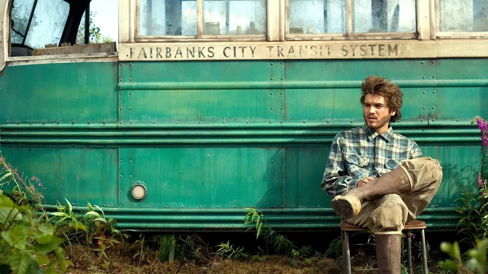

Immediately after graduating from college in 1991, McCandless had roamed through the West and Southwest on a vision quest like those made by his heroes Jack London and John Muir. In the Mojave Desert he abandoned his car, stripped it of its license plates, and burned all of his cash. He would give himself a new name, Alexander Supertramp, and, unencumbered by money and belongings, he would be free to wallow in the raw, unfiltered experiences that nature presented. Craving a blank spot on the map, McCandless simply threw away the maps. Leaving behind his desperate parents and sister, he vanished into the wild.
Into the Wild is a 2007 American biographical adventure drama film written, co-produced, and directed by Sean Penn. It is an adaptation of the 1996 non-fiction book of the same name written by Jon Krakauer and tells the story of Christopher McCandless ("Alexander Supertramp"), a man who hiked across North America into the Alaskan wilderness in the early 1990s. The film stars Emile Hirsch as McCandless and Marcia Gay Harden and William Hurt as his parents; it also features Jena Malone, Catherine Keener, Brian Dierker, Vince Vaughn, Kristen Stewart, and Hal Holbrook.
Trailer into the wild MovieAnother movie that is really like